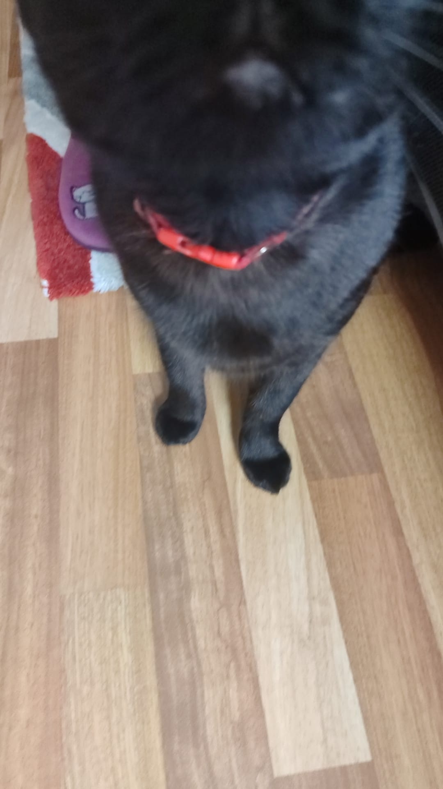
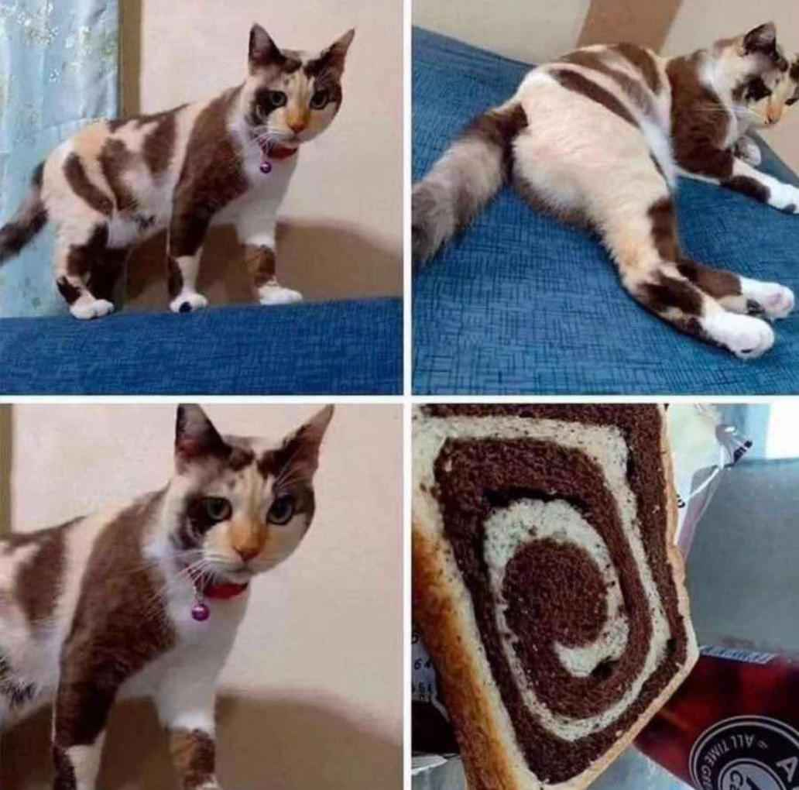
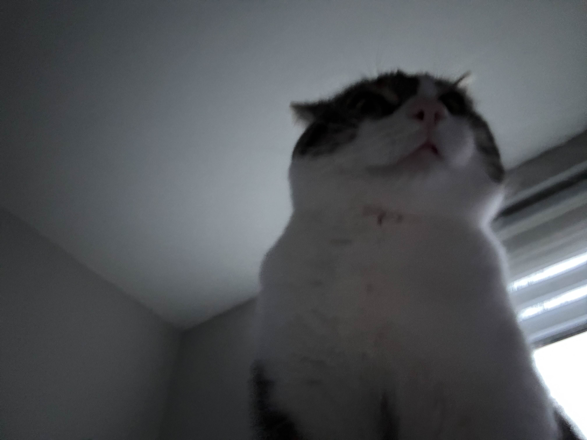

Yukarıda görmüş olduğunuz Düzce Üniversitesi logosu direkt olarak Düzce Üniversitesi web sitesinden alınmaktadır.
Aşağıda görmüş olduğunuz kedi resimleri ise sitemizin images klasöründen alınmakta olacaktır.(Görsel boyutları 300 genişlik 300 uzunluk olarak ayarlanmıştır)
Kedim Dalin. Kendisi siyah olmasına rağmen ismi zeytin değil
Mozaik pasta kedi.
Uykulu kedi.